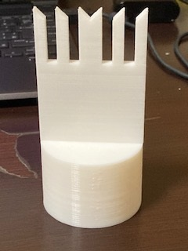

溝の大きさの調節次第といったところでしょうか<h1><font size="5">作成した機器</font></h1><br><br>
</img><br>
<font size="3">草を刈れるように作りましたが失敗しました。先端をもう少
<br>し草を引っかけられるような形状に改良したいです。</font><br><br>

<font size="3"><br>
グリップを作ってみました。手にフィットするように作りました。<br>
</font>
<br><br>
<br>
<font size="3">持ち手です。指を使ってしっかり持てるように作成してみました。<br></font>
<br>
<font size="3">溝の大きさの調節次第といったところでしょうか。
</font>